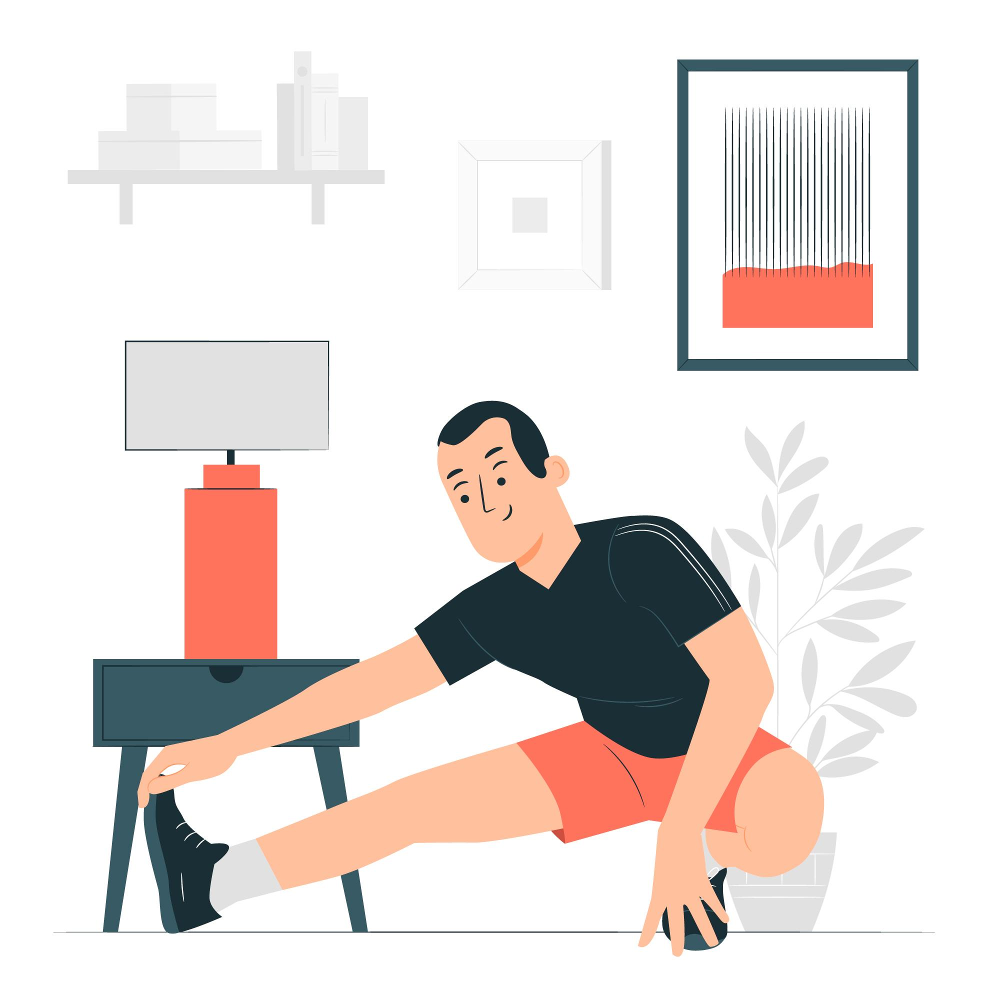
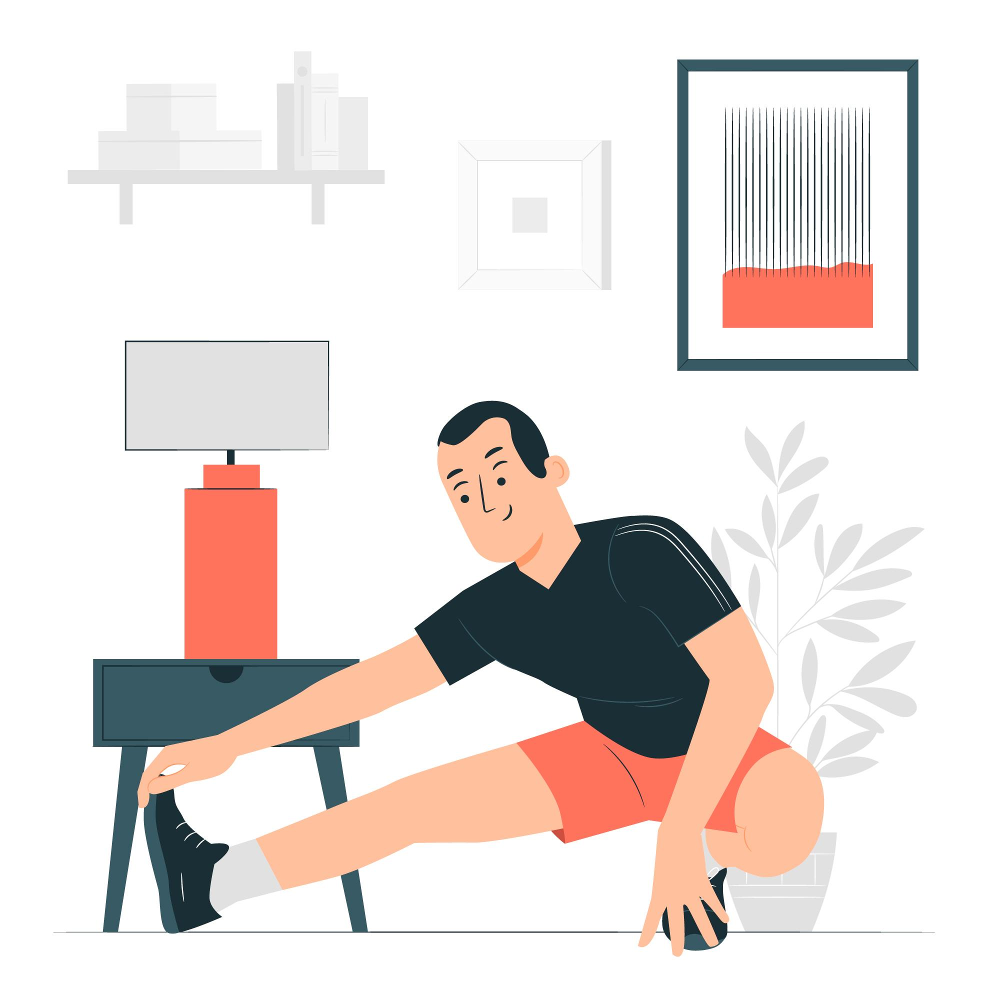

Small Breaks, Big Benefits!
BreakBuddy is a web app that sends you gentle desktop notifications to remind you to take regular breaks. Designed to boost your productivity and well-being, it helps you recharge and maintain focus, ensuring you prioritize self-care throughout your workday. Stay refreshed and productive with BreakBuddy!
- Hydration Break
- Take a moment to drink water, which can improve focus and energy
- Short Walks
- A quick walk around the office or outside to get some fresh air
- Deep Breathing Exercises
- Spend a minute focusing on deep breathing to calm your mind and reduce anxiety
- Stretching Routine
- Engage in a quick stretching session to relieve tension in your neck, shoulders, and back
 
